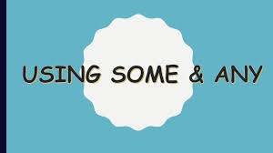

PERBEDAAN & PENGGUNAAN SOME & ANY
You read : Perbedaan dan Penggunaan some and any
Hello...
How are you doing? Kita telah membahas mengenai
"indefinite articles:A dan AN" dan perbedaan penggunaan There is & There are.
Kali ini kita akan membahas perbedaan dan penggunaan someand any.
"Aa itu some dan any?",
"Apa perbedaan antara some dan any?",
"Bagaimana penggunaan some dan any dalam kalimat?"Let's discuss!
Pengertian Some dan Any
Somedan any adalah bentuk quantifiers,yakni disebuah kata yang
digunakan sebelum kata benda yang menunjukan jumlah.

Contoh :
-
I have some books.
-
I don't have anybooks.
SOME dan ANY
Some dan Any keduanya dapat digunakan untuk kata benda countable
(dapat dihitung)atau uncountable(tidak dapat dihitung). Contoh countable :
- I have some spoons.
- I don't have any spoons.
untuk benda countable(dapat dihitung), gunakan bentuk plural(jamak)
Contoh diatas spoon menjadi spoons(ditambah akhiran-s).
Contoh uncountable :
- She has some information.
- She hasn't any information.
Sekian Materi yang dapat saya berikan,
kurang dan lebih saya mohon maaf
semoga dapat bermaanfaat bagi teman-teman.
Alangkah baiknya ada kritik dan saran dari teman-teman.
~from zero to hero~~